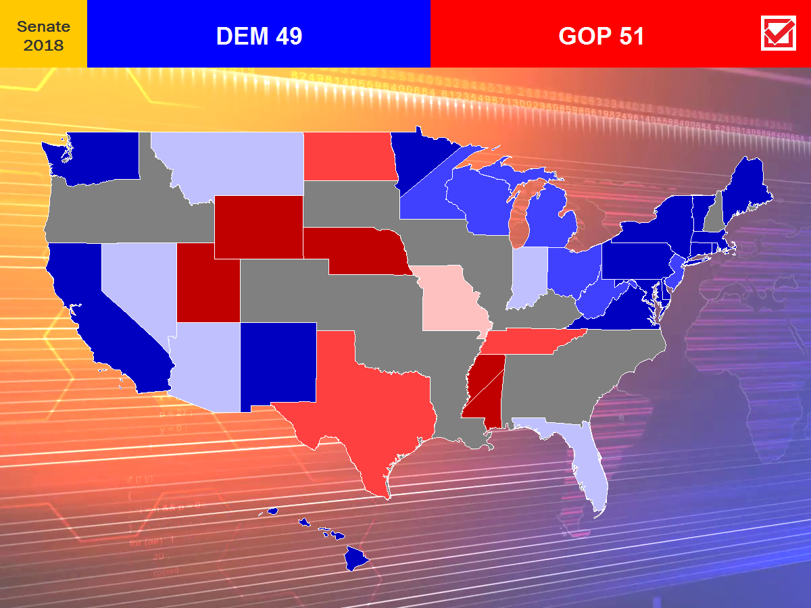

This year's model will mainly be a continuation of the probabilistic model that I came up with last year, which uses regression to predict the expected margin of an election then uses Monte Carlo simulation to model the uncertainty in the result. So far, it's been working with the exception of the 2017 special Senate election in Alabama.
My primary reason for switching to a probabilistic model is because a deterministic model does not account for uncertainty in an election, as seen in the 2016 election. For example, suppose that in one race, Candidate A leads Candidate B 51-47, but Candidate C leads Candidate D 44-40. Both Candidate A and Candidate C lead by 4 points, even though Candidate A is much more likely to win the election due the absence of uncertainty in the polling.
Here's an important caveat in reading probabilistic models: Just because someone is more likely to win an election does not mean that they will. It's important to keep in mind that election outcomes are extremely uncertain, as proven two years ago.
The probabilistic model tested last year is shown below as the 2018 model, now with two different loss criteria, OLS and LAD. The version tested last year was the OLS criteria, which is less robust than LAD. The weighted average model I used previously is shown as the 2012 model. There's also the 2018-M model, which estimates the spread based on undecided voters across all polls. I'm also experimenting with a 2018-N model, which is a deep neural network -- but the issue here is that neural networks are not very suitable for the kind of sparce and inaccurate data that we're dealing with. Hence, I may redact the 2018-N model as we get closer to the election, since all that it seems to do right now when there's a close race is to guess that the Republican wins. All of these models are based on polls, so how accurate these models are depends on how well the polls perform. For most races so far, there is not enough polling data to sufficiently estimate the outcome in the 2018 model. Generally, my models tend to underestimate the winning candidate.
The final forecast for this year's Senate races is that the GOP is very likely to retain control of the Senate, given that the model puts North Dakota and Texas both in the likely Republican column. An extremely tight race is forecasted in Missouri, with the different models diverging on the estimated winner.

| Race | Democrat | Republican | 2018-OLS Expected | 2018-OLS Probability | 2018-LAD Expected | 2018-LAD Probability | 2012 Spread | 2018-M Spread | Prediction |
| Arizona | Kyrsten Sinema | Martha McSally | Sinema +1.0 | 61.0% D | Sinema +0.9 | 61.4% D | Sinema +0.7 | Sinema +1 | Leans D |
| California | Dianne Feinstein Kevin de Leon | -- | -- | 100% D | -- | 100% D | -- | -- | Safe D |
| Connecticut | Chris Murphy | Matthew Corey | -- | -- | -- | -- | Murphy +18.9 | Murphy +16 | Safe D |
| Delaware | Tom Carper | Rob Arlett | -- | -- | -- | -- | -- | -- | Safe D |
| Florida | Bill Nelson | Rick Scott | Nelson +2.9 | 74.7% D | Nelson +3.5 | 88.0% D | Nelson +3.0 | Nelson +3 | Leans D |
| Hawaii | Mazie Hirono | Ron Curtis | -- | -- | -- | -- | -- | -- | Safe D |
| Indiana | Joe Donnelly | Mike Braun | Donnelly +1.5 | 55.7% D | Donnelly +0.9 | 53.6% D | Donnelly +2.1 | Donnelly +3 | Leans D |
| Maine | Angus King* Zak Ringelstein |
Eric Brakey | -- | -- | -- | -- | -- | -- | Safe I |
| Maryland | Ben Cardin | Tony Campbell | -- | -- | -- | -- | -- | -- | Safe D |
| Massachusetts | Elizabeth Warren | Geoff Diehl | -- | -- | -- | -- | Warren +25.1 | Warren +24 | Safe D |
| Michigan | Debbie Stabenow | John James | Stabenow +7.3 | 94.9% D | Stabenow +8.7 | 98.9% D | Stabenow +11.1 | Stabenow +9 | Likely D |
| Minnesota | Amy Klobuchar | Jim Newberger | -- | -- | -- | -- | Klobuchar +24.0 | Klobuchar +26 | Safe D |
| Minnesota | Tina Smith | Karin Housley | -- | -- | -- | -- | Smith +8.7 | Smith +8 | Likely D |
| Mississippi | David Baria | Roger Wicker | -- | -- | -- | -- | -- | -- | Safe R |
| Mississippi | Mike Espy | Cindy Hyde-Smith | -- | -- | -- | -- | -- | -- | Safe R |
| Missouri | Claire McCaskill | Josh Hawley | Hawley +0.9 | 58.5% R | Hawley +1.2 | 61.4% R | Hawley +0.6 | Tie | Leans R |
| Montana | Jon Tester | Matt Rosendale | Tester +4.3 | 79.2% D | Tester +5.3 | 89.1% D | Tester +3.8 | Tester +4 | Leans D |
| Nebraska | Jane Raybould | Deb Fischer | -- | -- | -- | -- | -- | -- | Safe R |
| Nevada | Jacky Rosen | Dean Heller | Rosen +3.1 | 79.4% D | Rosen +5.6 | 96.4% D | Rosen +2.7 | Rosen +2 | Leans D |
| New Jersey | Bob Menendez | Bob Hugin | Menendez +11.8 | 98.3% D | Menendez +15.6 | 99.8% D | Menendez +9.1 | Menendez +7 | Likely D |
| New Mexico | Martin Heinrich | Mick Rich | -- | -- | -- | -- | -- | -- | Safe D |
| New York | Kirsten Gillibrand | Chele Farley | -- | -- | -- | -- | -- | -- | Safe D |
| North Dakota | Heidi Heitkamp | Kevin Cramer | Cramer +10.7 | 99.5% R | Cramer +12.3 | >99.9% R | Cramer +11.1 | Cramer +10 | Likely R |
| Ohio | Sherrod Brown | Jim Renacci | -- | -- | -- | -- | Brown +9.6 | Brown +11 | Likely D |
| Pennsylvania | Bob Casey | Lou Barletta | -- | -- | -- | -- | Casey +15.2 | Casey +15 | Safe D |
| Rhode Island | Sheldon Whitehouse | Robert Flanders | -- | -- | -- | -- | -- | -- | Safe D |
| Tennessee | Phil Bredesen | Marsha Blackburn | Blackburn +4.9 | 81.0% R | Blackburn +6.0 | 91.7% R | Blackburn +5.4 | Blackburn +7 | Likely R |
| Texas | Beto O'Rourke | Ted Cruz | Cruz +6.9 | 98.6% R | Cruz +6.1 | 99.9% R | Cruz +6.7 | Cruz +7 | Likely R |
| Utah | Jenny Wilson | Mitt Romney | -- | -- | -- | -- | -- | -- | Safe R |
| Vermont | Bernie Sanders* | Lawrence Zupan | -- | -- | -- | -- | -- | -- | Safe I |
| Virginia | Tim Kaine | Corey Stewart | -- | -- | -- | -- | Kaine +16.5 | Kaine +16 | Safe D |
| Washington | Maria Cantwell | Susan Hutchison | -- | -- | -- | -- | -- | -- | Safe D |
| West Virginia | Joe Manchin | Patrick Morrisey | -- | -- | -- | -- | Manchin +8.4 | Manchin +7 | Likely D |
| Wisconsin | Tammy Baldwin | Leah Vukmir | -- | -- | -- | -- | Baldwin +10.6 | Baldwin +11 | Likely D |
| Wyoming | Gary Trauner | John Barrasso | -- | -- | -- | -- | -- | -- | Safe R |
*Sen. Angus King (I-ME) and Sen. Bernie Sanders (I-VT) caucus with the Democrats.
Some pundits believe that a 'blue wave' is to sweep the nation, but given that the Democrats are defending way more seats than Republicans this year, the question is whether it will be enough for the Democrats to take the Senate. Recent evidence suggests that the anticipated 'blue wave' is not quite as blue as it seems, particularly due to the jump in Republican energy following the confirmation battle of Justice Brett Kavanaugh to the Supreme Court. Moreover, President Trump's approval ratings are in much better shape than former President Obama's were in 2010. To take control of the Senate, the Democrats must win all but one of Arizona, Florida, Indiana, Missouri, Montana, Nevada, North Dakota, Ohio, Tennessee, West Virginia, and Wisconsin. On a typical election year, such a position would have doomed the Democrats, but given the uncertainty of the election, a scenario where the Democrats take the Senate is not unimaginable. The Democrats are expected to lose North Dakota, and the Republicans are strongly favored to retain control of the Senate.
Control of the Senate will hinge on the following races:
Arizona (Sinema +1.0; 61.0% chance). Incumbent Sen. Jeff Flake (R) is not running for reelection, leaving the door wide open for a Democrat to take this seat. Arizona has long been a red state. The last Democrat to have been elected to the Senate here was Dennis DeConcini in 1988. However, due to immigration into this state, Arizona has been shifting rapidly to the left, and Hillary Clinton proved in 2016 that Arizona has moved to become a battleground state. The Democratic candidate, Congresswoman Kyrsten Sinema, has a mixed political history. She was originally a Green Party activist before becoming a bipartisan Blue Dog when elected to the House in 2012. If elected, she will be the second LGBT member of the Senate following Sen. Tammy Baldwin (D-WI). Meanwhile, GOP nominee Rep. Martha McSally is running on the Trump platform. Recent evidence suggests that Democrats have been underperforming among Latino voters, a key demographic that Democrats must win over and turn out. This fact plus Arizona's historic lean to the right may give Rep. Martha McSally the chance to hold this seat for the GOP.
Florida (Nelson +2.9; 74.7% chance). Incumbent Sen. Bill Nelson (D) is running for reelection challeged by incumbent Gov. Rick Scott (R). Nelson, the former astronaut, was first elected to the Senate in 2000 and has consistently been one of the more moderate Democrats in the Senate. Hence, it's unlikely that strong enthusiasm from the liberal left flank of the Democratic Party will strongly benefit Nelson. In 2006, Nelson caught a bit of a break when the GOP nominated the polarizing Bush v. Gore former Florida Secretary of State Katherine Harris. In 2012, he easily defeated Connie Mack IV, the son of his predecessor. On the other hand, Scott has never broken 50 percent in his runs for Governor despite the 2010 and 2014 midterms being Republican waves and consistently receives low approval ratings, although recent times have shown Scott's approval increasing. However, Scott is able to pour tons of money into his campaigns in an extremely expensive state to run statewide. In a generic year, Nelson would likely edge out Scott by a narrow margin, but given the political climate expected this midterm season, Nelson enters the election with the upper hand.
Indiana (Donnelly +1.5; 55.7% chance). Incumbent Sen. Joe Donnelly (D) is running for reelection in a solid red state. Donnelly was quite lucky to have been elected to the Senate in the first place - in 2012, the popular centrist incumbent Sen. Dick Lugar (R) lost to Tea Party conservative Richard Mourdock (R) in the GOP primary. However, Mourdock's controversial comment that pregnancy following rape was the intention of God cleared the way for Donnelly to win the seat. However, Donnelly might not have the same luck this time against businessman Mike Braun, although a blue wave could save Donnelly from defeat.
Missouri (Hawley +0.9; 58.5% chance). Missouri is the only race so far where the models diverge in their estimates, showing the competitiveness of this race. Missouri Attorney General Josh Hawley (R) is giving a tough challenge for incumbent Sen. Claire McCaskill (D), who is seeking a third term. McCaskill is another red-state Democrat who lucked out of losing in 2012. The GOP looked poised to defeat McCaskill until Tea Party candidate Todd Akin made controversial remarks regarding "legitimate rape", which allowed McCaskill to cruise to victory. Meanwhile, the Missouri GOP is again facing internal trouble after former Gov. Eric Greitens was forced to resign in June following an extramarital affair and alleged blackmail. Though a close election is forecasted, the Democratic wave just might not be enough to save McCaskill again.
Montana (Tester +4.3; 79.2% chance). Incumbent Sen. Jon Tester (D) is running for reelection in a state that voted for President Trump in a landslide. However, Montana is one of those states that have a history of voting blue on occasion, electing politicians such as former Sen. Max Baucus (D) and incumbent Gov. Steve Bullock (D). However, Tester has never broken 50 percent here, so we'll see whether or not he has more lives than fingers on his left hand. It's going to be very tough for Tester to win, although the national mood might carry him across the finish line.
Nevada (Rosen +3.1; 79.4% chance). Incumbent Sen. Dean Heller (R) is running for reelection in a state that narrowly voted for former Secretary of State Hillary Clinton (D) in 2016. Additionally, like Arizona, Nevada is also another state that is drifting blue due to demographic changes and immigration, not to mention the Democratic excitement sweeping the country. A concoction of all of these factors make it difficult for Heller to win reelection. However, recent evidence suggests that Democrats are underperforming among Latino voters, a factor that could carry Heller to victory in Nevada. However, note that polls in Nevada tend to lean Republican by 2 to 3 points, which explains why my own models are more optimistic for the Democrat than most polls.
New Jersey (Menendez +9.2; 69.5% chance). Incumbent Sen. Bob Menendez (D) is running for reelection in a solid blue state. However, his 2015 indictment and 2017 mistrial for federal corruption charges have further tanked his already low approval ratings, giving businessman Bob Hugin (R) a chance in Democratic territory in a similar manner that allowed former Gov. Chris Christie (R) to pickup the Governor's seat from Menendez's predesessor, Jon Corzine (D). Although Menendez has been recovering in the polls, he is not out of the woods yet.
North Dakota (Cramer +10.7; 99.5% chance). Incumbent Sen. Heidi Heitkemp (D-NPL) is seeking reelection in a state that voted for President Trump in a landslide. Heitkamp pulled an upset victory over Congressman Rick Berg (R) in 2012 and is poised for another tight match. Like Montana, North Dakota is a rural state that elects a Democrat every now and then. If Heitkamp loses, it will be the first time since 1959 that no Democrat is part of North Dakota's congressional delegation. This is the Republican Party's best chance of picking up a Democratic seat.
Ohio (Brown +9.6). Incumbent Sen. Sherrod Brown (D) is seeking reelection in a perennial battleground state. Despite the decline of unions throughout the Midwest, Brown's style of economic populism works well with the Ohio working class, which carried him to a close but comfortable victory in 2012 against Josh Mandel, who dropped out of this year's Senate race after citing concerns of his wife's health, which paved the way for Jim Renacci to claim the GOP nomination. Moreover, Brown is seen as one of the few Democrats with the ability to bridge the divide betweeen the establishment and progressive elements in the Democratic Party. However, despite the rightwards drift of Ohio in the past decade, Brown looks to cruise to victory.
Tennessee (Blackburn +4.9; 81.0% R). Incumbent Sen. Bob Corker (R) is retiring after two terms in the Senate and a feud with President Trump. What normally would be a reliably Republican hold appears very competitive this season, especially following the entry of popular former Gov. Phil Bredesen (D). Praised by the retiring Corker, Bredesen is among the last of the disappearing moderate Southern Democrats and the type of politician that the Democratic Party needs to have hope of reclaiming the Senate. Tennessee has not seen a close senate race since Bob Corker ran against then-Congressman Harold Ford in 2006. If elected, Bredesen would be the first Democrat elected to the Senate from Tennessee since former Vice President Al Gore in 1990. However, the Democrats have had a bad history of nominating popular former politicians in GOP territory, particularly Bob Kerrey in Nebraska in 2012 and Evan Bayh in Indiana in 2016, only for both to lose by a decisive margin. The solid Republican roots of Tennessee is likely carry Rep. Marsha Blackburn (R), a staunch conservative, to the Senate.
West Virginia (Manchin +8.4). Incumbent Sen. Joe Manchin (D) is one of the last of a brand of socially conservative Democratic politicians holding statewide office in Appalachia. The political situation in this state is a bit of a mixed bag for Manchin. Manchin is a popular Senator and former Governor in West Virginia, a state that was for a long time solidly Democratic territory. Coal and unions once ruled the politics of this state until the dawn of the 21st century, when the state began to rapidly shift towards Republicans, especially after the GOP wave in 2010. Today, the decline of coal has hit West Virginia hard, and following the rise of socially liberal policies championed by coastal Democrats, West Virginia has become solid Republican territory. To win, Manchin must steer clear of the social liberalism that is toxic to many areas of the country and survive Republican attempts to brand him as another liberal Democrat in league with Hillary Clinton and Nancy Pelosi and out of touch with West Virginia. His votes to confirm Trump appointees Justice Neil Gorsuch and Justice Brett Kavanaugh to the Supreme Court further cement his reputation as a conservative Democrat. If Manchin loses reelection, it will be the first time in almost a century that no Democrat is part of the West Virginia congressional delegation, and the first time in over half a century that Manchin's seat is occupied by a Republican, as this seat was occupied by Senate Majority Leader Robert Byrd from 1959 to 2010. Although he's in a tough battle against West Virginia Attorney General Patrick Morrisey, Manchin is not going away quietly, and he remains the favorite to win.